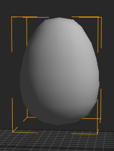

EllipsoidCollider
The EllipsoidCollider is one of the primitive Collider types available in the Zero Engine. The EllipsoidCollider component can be added to any as long as it has a Transform component.
Common Uses
- Defining collision boundaries for models that have distinct shapes that call for a non-uniformly scaled spherical object instead of a perfect sphere.
- Defining the boundaries for an ellipsoid-shaped
Regionwith aPhysicsEffectattached to it. - Defining the boundaries for a collision-based, ellipsoid-shaped trigger volume that causes a
CollisionEventto be dispatched.
Using the EllipsoidCollider
Creating an EllipsoidCollider
When added to an otherwise empty Transform object, the EllipsoidCollider still retains all of its functionality and properties. The In-Editor properties for the EllipsoidCollider can be seen in the following picture, where a EllipsoidCollider component has been placed on an otherwise empty Transform object:
When this object is selected and viewed in the Level Window, the only thing that will be visible are the DebugDraw lines marking the boundaries of the EllipsoidCollider; that is, the area in which collision will be resolved if this Collider comes into contact with another Collider (assuming the Colliders belong to the default CollisionGroup ).
The EllipsoidCollider above resembles a perfect sphere because when it is initially created, it is scaled uniformly. If the user were to change the Radii property of the EllipsoidCollider to [1.3, 2.8, 0.7], the shape will change to reflect the new values:
The EllipsoidCollider DebugDraw lines resemble the actual ellipsoid created by the values set in Radii.
Applying an EllipsoidCollider to an Object
The EllipsoidCollider component is best used for models that are of an ellipsoid shape or for parts of an object that where an ellipsoid provides the best coverage. To see how an EllipsoidCollider may be used within a project, a three-dimensional Model of an egg will be used, as can be seen here in the Level Window:

Attaching an EllipsoidCollider to an Object
To simulate semi-realistic collision for the Egg object, only one object with an EllipsoidCollider will be needed. The process of attaching and adjusting the EllipsoidCollider object is illustrated in the following screenshots:
The object with the EllipsoidCollider component created and parented to the Egg object as seen in the Objects Window
The object with the EllipsoidCollider parented to the Egg object and adjusted so that the values confirm to that of the Egg model.
As is apparent in the previous screenshot, the EllipsoidCollider doesn’t cover the entire egg. While another Collider could be used in conjunction with the EllipsoidCollider, it should only be done in cases where extremely precise collision boundaries are necessary.
Demonstration
The following recording show the Egg object dropping, wobbling, and rolling much like an egg in real-life.

As was stated before, however, the one EllipsoidCollider on the Egg object does not completely cover the entire Egg model. While it is not overtly obvious from the demonstration, there are a few areas where the egg ever-so-slightly clips through the floor. It is up to the user whether or not to add more precise collision; one can get away with using a single primitive Collider in a way that covers most of the object, as long the Collider still gives the object the appearance of behaving in a life-like manner (or specifically non-life-like manner if that’s the aim).